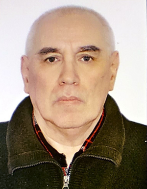

Шугайло Юрій Борисович
кандидат фізико-математичних наук, доцент
Основні публікації:
Індексовані в Scopus чи Web of Science:
- Martynovych, L., Gunchenko, Y., Shugailo, Y., ...Slutskyi, D., Smirnov, K. Design of Ternary Decoder CEUR Workshop Proceedings, 2021, 3126, Р. 285–290
- Gunchenko Yurii, О, Martynovych Larysa, Y, Mezhuyev Vitaliy, Shugailo Yurii, B, Bercov Yurii, M, Design of a ternary RS-trigger. 7th International Conference on Computer Technology Applications ICCTA (2021 July 13-15, 2021).| Vienna, Austria Р. 99–103 DOI: 10.1145/3477911.3477927
- Shugailo Y., Levchenko A., Bercov Y. Software of Numerical Analysis Which is used in Teaching the Creation Of Electronic Circuits. 2020 IEEE 6th International Conference on Methods and Systems of Navigation and Motion Control (MSNMC) (Kyiv. Ukraine. 2020. October 20-23). Kyiv. 2020. Р.77-80.
- Gunchenko Yurii, Shugailo Yurii, BercovYurii, Martynovych Larysa. Analysis of the current state of the elements of ternary logic. Зб. наук. пр. Військового інституту Київського національного університету імені Тараса Шевченка. Київ. 2022. № 76. С. 88 – 101.
- Мартинович, Л., Гунченко, Ю., Шугайло, Ю., & Берков, Ю. Проектування та синтез трійкових логічних елементів. Computer Systems and Information Technologies. 2022. № 4, Р.52–60.
Тези доповідей:
- Антіпов М.М., Шугайло Ю.Б. Розробка пристрою для відображення тривимірних даних /Матеріали ХІ Всеукраїнської науково-практичної конференції здобувачів вищої освіти та молодих вчених з автоматичного управління присвяченої Дню ракетно-космічної галузі України: Збірник наукових праць / Під редакцією Г.В. Рудакової та ін. - Херсон-Хмельницький : Видавництво ФОП Вишемирський В.С., 2024. с. 81-84.
- Кішубаєва К.Т., Шугайло Ю.Б. Iнформаційна безпека космічних місій: перспективи стеганографії /Матеріали ХІ Всеукраїнської науково-практичної конференції здобувачів вищої освіти та молодих вчених з автоматичного управління присвяченої Дню ракетно-космічної галузі України: Збірник наукових праць / Під редакцією Г.В. Рудакової та ін. - Херсон-Хмельницький : Видавництво ФОП Вишемирський В.С., 2024. с.88-91.
- Данильчак О. І., Шугайло Ю. Б. Моделювання роботи PWM перетворювача живлення Dc/Dc. /XXI всеукраїнська конференція студентів і молодих науковців «Інформатика, інформаційні системи та технології» - Одеса, 2024, с. 87-89.
- Кішубаєва К. Т., Шугайло Ю. Б. Iнформаційна безпека: перспективи стеганографії. /XXI всеукраїнська конференція студентів і молодих науковців «Інформатика, інформаційні системи та технології» - Одеса, 2024, с. 100-102.
- Антіпов М. М., Шугайло Ю. Б. Пристрій для відображення тривимірних даних. /XXI всеукраїнська конференція студентів і молодих науковців «Інформатика, інформаційні системи та технології» - Одеса, 2024, с. 69-71.
- Антіпов М.М., Шугайло Ю.Б. Розробка пристрою для відображення тривимірних даних. XІІ міжнародна науково-технічна інтернет-конференція «Проблеми та перспективи розвитку автомобільного транспорту» 16-18 квітня 2024 р., Вінниця – ВНТУ – 2024, с. 33-36.
- Шугайло Ю.Б., Левченко А.А., Берков Ю.Н. Мониторинг местности с помощью дронов. Conference papers 8th International Scientific Conference «Science progress in European countries: new concepts and modern solutions» (Stuttgart. Germany. July 12.2019). Stuttgart. 2019.Р.190.
- Shugailo Yu.B., Korenkova H.V., Bercov Yu.N. Modeling a switching power supply with MATLAB INTERNATIONAL SCIENTIFIC INTEGRATION ‘2020, сonference proceedings (Kyiv, Ukraine, 2020, november 13-14). Kyiv. 2020. Р.99-102.
- Шкапоєд В.В., Шугайло Ю.Б. Моделювання електронних кіл з використанням MATLAB/SIMULINK. Тези доповідей на шістнадцяту Всеукраїнську конференцію студентів і молодих науковців «ІНФОРМАТИКА, ІНФОРМАЦІЙНІ СИСТЕМИ ТА ТЕХНОЛОГІЇ». Одеса: ПНПУ імені К. Д. Ушинського, ОНУ імені І. І. Мечникова. 2019. С.85.
- Захаров А.О., Шугайло Ю.Б., Побудова оптичної мережі. Тези доповідей на шістнадцяту Всеукраїнську конференцію студентів і молодих науковців «ІНФОРМАТИКА, ІНФОРМАЦІЙНІ СИСТЕМИ ТА ТЕХНОЛОГІЇ». Одеса: ПНПУ імені К. Д. Ушинського, ОНУ імені І. І. Мечникова. 2019. С.104.
- Пєршин С.Є., Шугайло Ю.Б. Комп’ютерне моделювання електричних фільтрів . Тези доповідей на сімнадцяту Всеукраїнську конференцію студентів і молодих науковців «ІНФОРМАТИКА, ІНФОРМАЦІЙНІ СИСТЕМИ ТА ТЕХНОЛОГІЇ». Одеса: ПНПУ імені К. Д. Ушинського, ОНУ імені І. І. Мечникова. 2020. С.104.
- Вєтров О.О., Шугайло Ю.Б. Моделювання імпульсного понижуючого регулятору напруги із використанням MATLAB/SIMULINK . Тези доповідей на сімнадцяту Всеукраїнську конференцію студентів і молодих науковців «ІНФОРМАТИКА, ІНФОРМАЦІЙНІ СИСТЕМИ ТА ТЕХНОЛОГІЇ». Одеса: ПНПУ імені К. Д. Ушинського, ОНУ імені І. І. Мечникова. 2020. С.106.
- Вєтров О. О., Шугайло Ю. Б. Розробка комп’ютерної технології інтерактивної презентації результатів наукових досліджень. Тези доповідей на вісімнадцяту Всеукраїнську конференцію студентів і молодих науковців «ІНФОРМАТИКА, ІНФОРМАЦІЙНІ СИСТЕМИ ТА ТЕХНОЛОГІЇ». Одеса: ПНПУ імені К. Д. Ушинського, ОНУ імені І. І. Мечникова. 2021. С.40.
- Гейко А.C., Шугайло Ю.Б. Програмне забезпечення для інформаційних систем на мікроконтролері. Тези доповідей на вісімнадцяту Всеукраїнську конференцію студентів і молодих науковців «ІНФОРМАТИКА, ІНФОРМАЦІЙНІ СИСТЕМИ ТА ТЕХНОЛОГІЇ». Одеса: ПНПУ імені К. Д. Ушинського, ОНУ імені І. І. Мечникова. 2021. С.60.
- Харитонов М.О., Шугайло Ю.Б. Індивідуальна мобільна інформаційна система на мікроконтролері. Тези доповідей на вісімнадцяту Всеукраїнську конференцію студентів і молодих науковців «ІНФОРМАТИКА, ІНФОРМАЦІЙНІ СИСТЕМИ ТА ТЕХНОЛОГІЇ». Одеса: ПНПУ імені К. Д. Ушинського, ОНУ імені І. І. Мечникова. 2021. С.140.
- Сікірницька О.С., Шугайло Ю.Б. Моделювання електронних схем за допомогою спеціалізованих пакетів. Тези доповідей на вісімнадцяту Всеукраїнську конференцію студентів і молодих науковців «ІНФОРМАТИКА, ІНФОРМАЦІЙНІ СИСТЕМИ ТА ТЕХНОЛОГІЇ». Одеса: ПНПУ імені К. Д. Ушинського, ОНУ імені І. І. Мечникова. 2021. С.156.
Монографії:
- Levchenco Andrii, Shаripova llnara, Shugailo Yurii, Bercov Yurii, Korenkova Hanna, Zuj Oksana Errors of Image Compressions by The UAV Comruter by Different Methods in Real Time. / Part of the monograph “Intellectual systems and information technologies”. Vienna: Premier Publishing s.r.o. 2021. P. 5 - 21.
Патент на винахід або корисну модель:
- Спосіб кодування-декодування даних з шифруванням підвищеної криптостійкості: пат. 147385 Україна МПК (2006) G09C 1/00, G06F 13/00. Коваль В.В., Гунченко Ю.О., Левченко А.О., Шворов С.А., Опришко О.О., Пасічник Н.А., Лендєл Т.І., Шугайло Ю.Б., Романенко К.Є., Шворов А.С., Юхименко А.С. - № u202006829, заявл. 23.10.2020, опубл. 05.05.2021, бюл. № 18.
- Трійковий RS-тригер: пат. 149386 Україна МПК (2021.01) Y03K 19/00. Гунченко Ю.О., Глауберман М.А., Мартинович Л.Я., Романенко К.Є., Межуєв В.І., Маслій Н.Д., Шугайло Ю.Б., Берков Ю.М., Фастиковський П.П. - № u 202104077, заявл. 13.07.2021, опубл. 10.11.2021, бюл. № 45.
Відповідальний виконавець наукової теми
Відповідальний виконавець наукової теми №306 «Комп’ютерні технології, системи, компоненти: моделювання та програмне забезпечення». (№ держ. реєстрації 0121U110545, з 1 січня 2021 р. по 31 грудня 2024 р., без цільового фінансування)Навчально-методичні посібникі
- Берков Ю.М., Шугайло Ю.Б., Якимчук В.І., Левченко А.О. Методичні вказівки до виконання лабораторних робіт з дисципліни «Архітектура комп'ютерів: Програмування в середовищі MS MASM. Частина 1». Для студентів усіх форм навчання спеціальності 123 - «Комп'ютерна інженерія» Одеса, ОНУ. 2020 р. 57 с. http://computer-science.onu.edu.ua/MASM_1_.pdf
- Берков Ю.М., Шугайло Ю.Б., Якимчук В.І. Методичні вказівки до курсу «Системи керування базами даних: Обробка баз даних засобами MatLab. Частина 1». Для студентів усіх форм навчання спеціальності 123 - «Комп'ютерна інженерія» Одеса, ОНУ, 2020 р. 44 с.
- Технології проектування комп’ютерних систем: Методичні вказівки до виконання курсового проекту. Укладачі Мартинович Л.Я., Гунченко Ю.О., Коренкова Г.В., Шугайло Ю.Б. 2022. – 28 с.
Підвищення кваліфікації, сертифікати:
- Міжнародне післядипломне практичне стажування «Викладання та дослідження в сучасному університеті: виклики, рішення та перспективи» організоване педагогічним факультетом Білостоцького університету (Польща) 11 жовтня — 19 листопада 2021 року (180 навчальних годин (6 ECTS))
- Сертифікат володіння англійською мовою, рівень B2. Сертифікат № GE229ONU2022 від 24.06.2022
Дисципліни, що викладає:
- Комп'ютерна електроніка Робоча програма; Силабус
- Комп'ютерна схемотехніка та програмування контролерів Робоча програма; Силабус
- Розробка GUI для керуванням зовнішніми пристроями Робоча програма; Силабус
- Комп’ютерна схемотехніка та архітектура комп’ютерів Робоча програма; Силабус